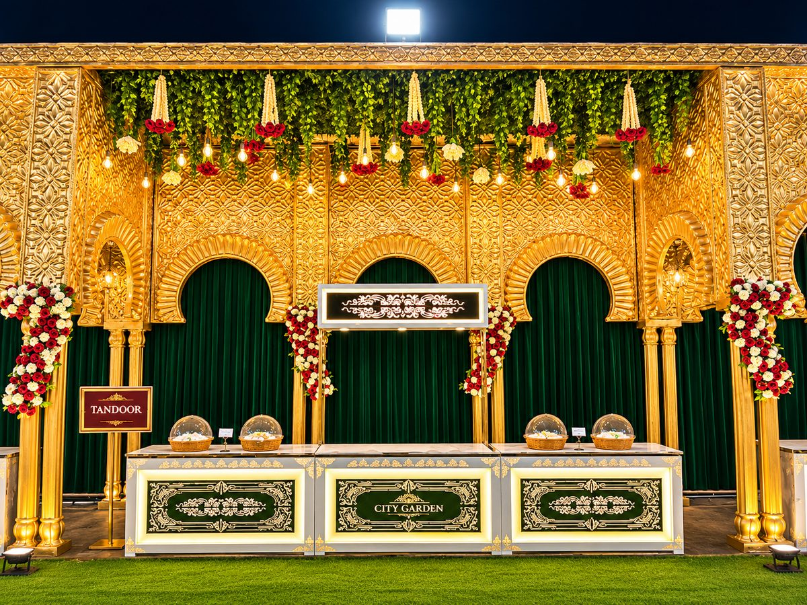
The open marriage lawn
A wide lawn for the mandap, the stage, the baraat welcome and the big reception that follows. Lit up after dark, it becomes the setting most families remember.
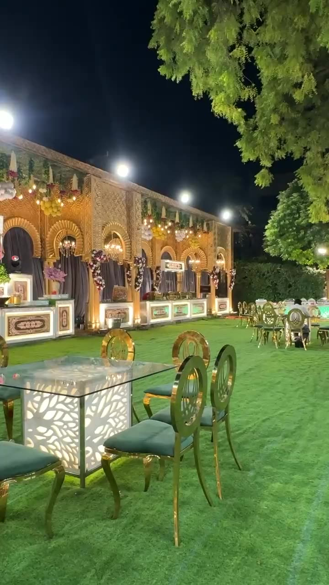
Welcome to City Garden
A marriage lawn and banquet hall in Varanasi, with a team that looks after the details so your family can enjoy the day.
Since 2014, City Garden has hosted families on one of the most important days of their lives. Set at Andhrapull, Chaukaghat on Grand Trunk Road in Varanasi, it brings an open marriage lawn, an indoor banquet hall and guest rooms together in one place.
Venue, food, decoration and arrangements are looked after by one team, so you are not chasing five different people. We respect every ritual and every family's way of celebrating, and we plan around yours.
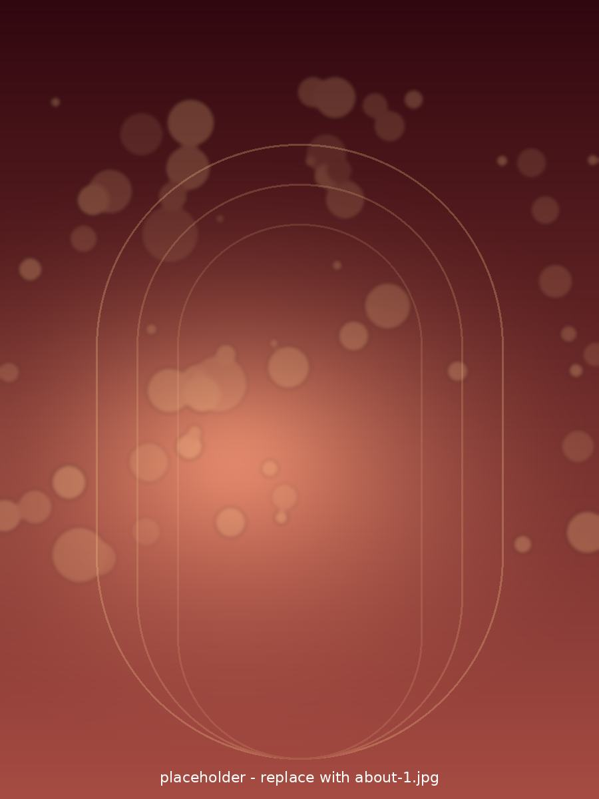
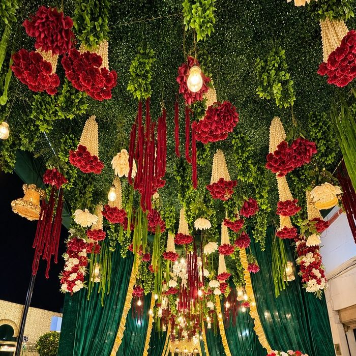
Celebrate under the open sky or indoors. Many families use both: ceremonies on the lawn, a reception in the banquet hall.
Keep scrolling to walk through the venueSwipe to walk through the venue

A wide lawn for the mandap, the stage, the baraat welcome and the big reception that follows. Lit up after dark, it becomes the setting most families remember.
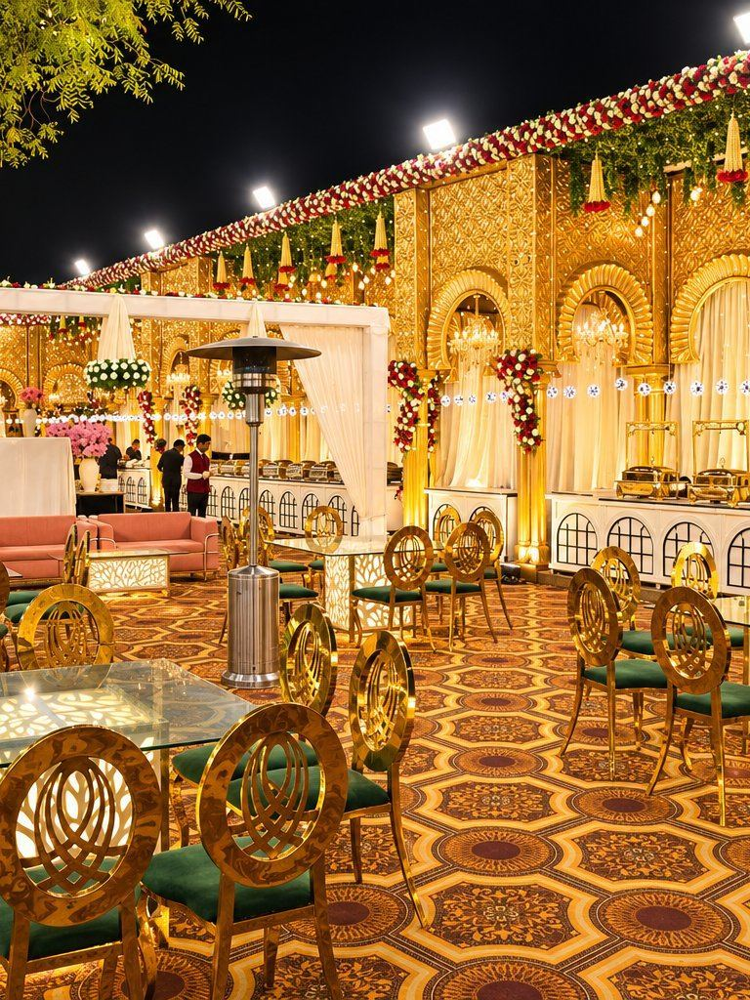
An indoor space for receptions, engagements and family functions, and a comfortable plan B when the weather needs one.
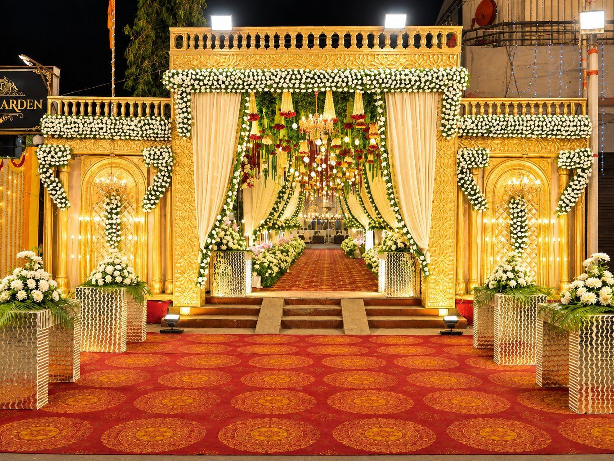
On Grand Trunk Road near Varanasi Cantt, with on-site parking, generator backup and security for a smooth evening.
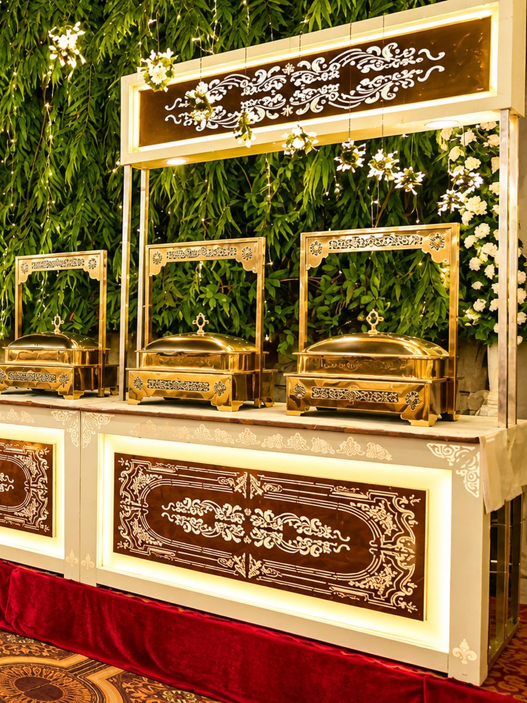
In-house vegetarian and non-vegetarian menus for weddings, receptions and family functions, shaped around your guests and your traditions.
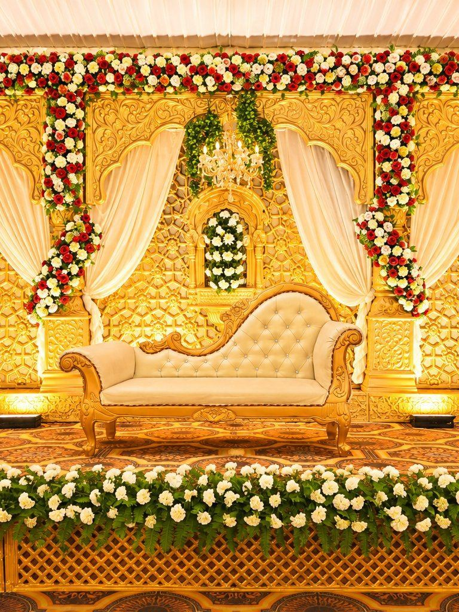
Stage, mandap, lighting, flowers and styled seating, from classic traditional looks to a theme that is entirely your own.
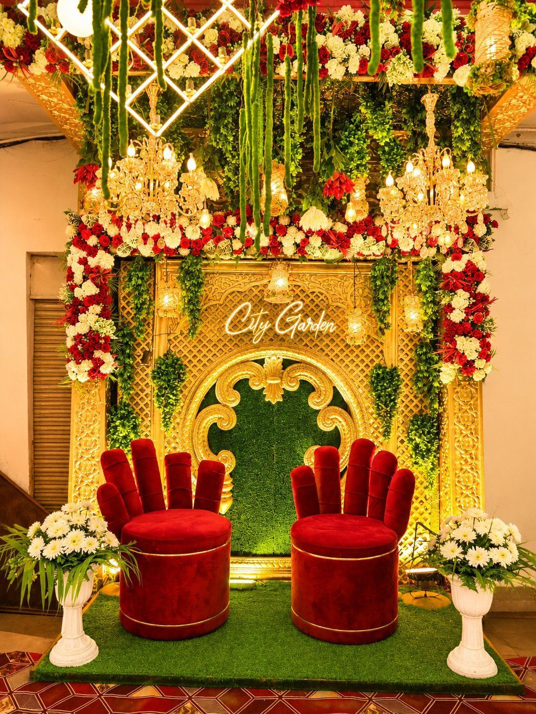
One point of contact for everything on the venue side, so your questions get answered and the small details do not slip.
Plan it your way
From pre-wedding rituals to milestone gatherings, every event has its own mood. Explore a few ways to make the moment yours at City Garden.
Bring colour, flowers and the whole family together for an easy-going daytime celebration with space for photographs and laughter.
Plan a Haldi or Mehendi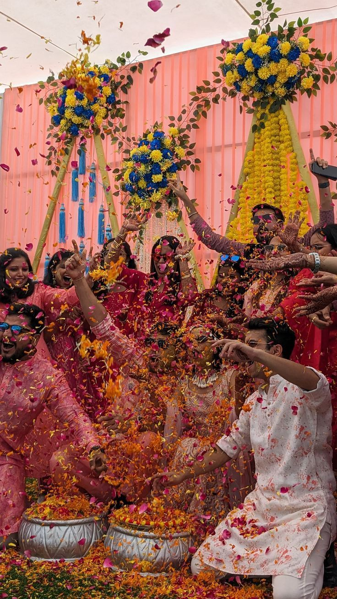
From the ring ceremony to an evening of music and performances, create a gathering that moves at your family’s pace.
Plan an engagement or Sangeet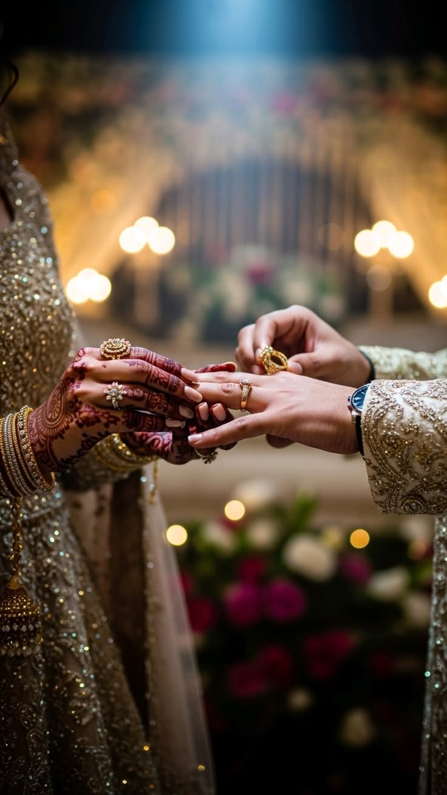
Celebrate the moments that matter—baraat, varmala, pheras, Nikah, Walima or a reception—with one team looking after the setting.
Plan a wedding celebration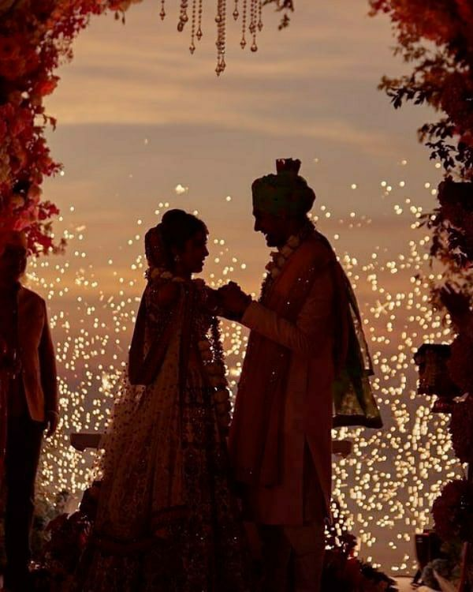
For birthday dinners, corporate gatherings and seasonal parties, create an atmosphere that feels personal from the first welcome to the last goodbye.
Plan your celebration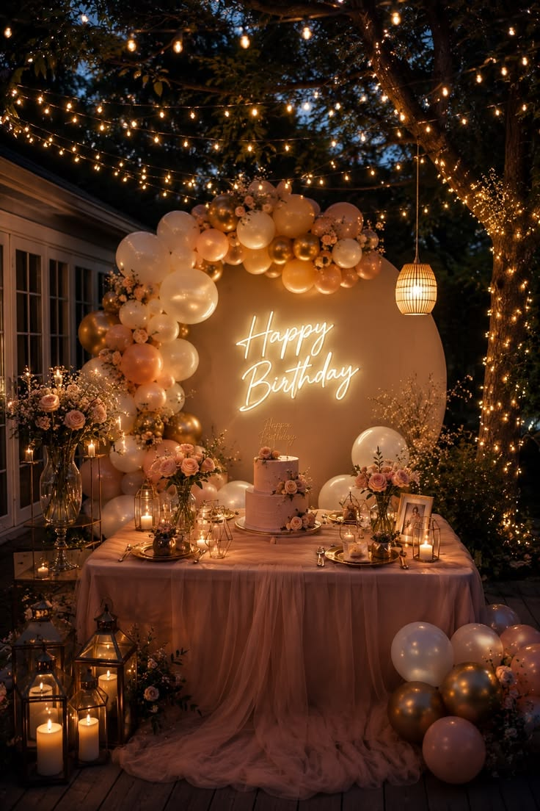
A few moments from the lawn. Tap a reel for sound.
The garden was large and well maintained, perfect for outdoor weddings.
Tell us about your event or book a site visit. Your enquiry opens in WhatsApp, and we usually reply the same day.